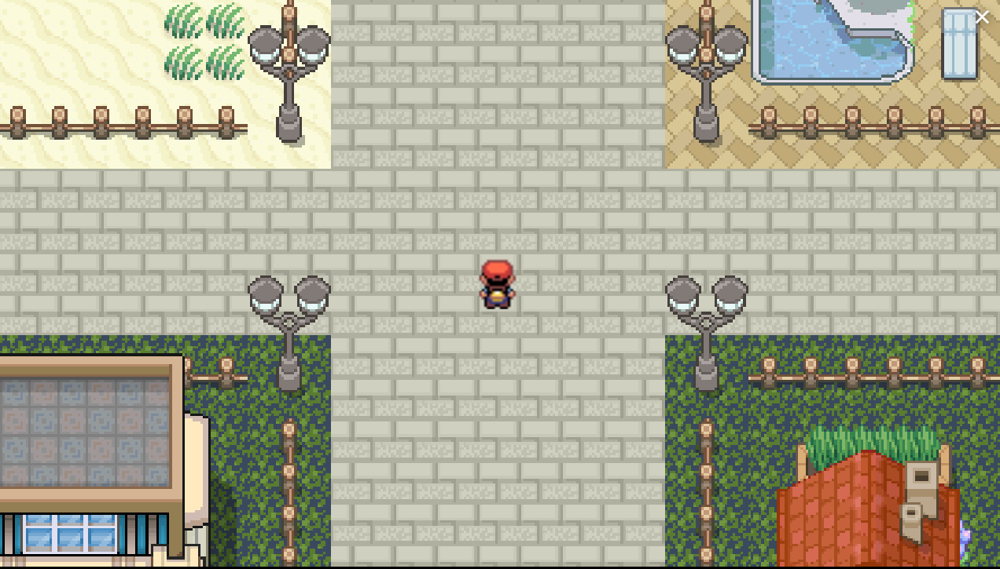
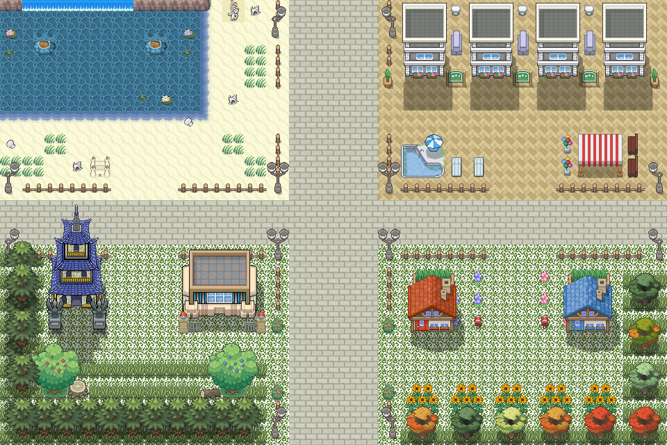

Pokemon-Inspired RPG Game

1. Project Description:
For my final project, I want to build off MP3 and continue in the direction of game development. Inspired by
Genshin Impact and Pokemon series, the intended goal of the project is to create a turn-based RPG game that
features different elemental reactions, which have varying effects depending on which interact. The player
will control a team of characters with different elemental abilities, each with their own strengths and
weaknesses. The game will have a unique battle system that emphasizes strategic decision-making and careful
planning. The story of the game will take place in a fantasy world, hopefully with a rich lore and cast of
unique characters.
2. Project Visuals:
The game will feature pixel art graphics that evoke a feeling of nostalgia, resembling classic RPGs. The
characters, enemies, and environments will be designed to have a consistent visual style. The UI will be
simple and intuitive, with clear indicators of turn order, health, and elemental strengths and weaknesses.
3. Project Versions:
• Prototype: The prototype version of the game will include the basic gameplay mechanics, such as turn-based
battles, elemental reactions, character abilities, and a basic story introduction.
• Final: The final version of the game will include polished graphics, improved gameplay mechanics, a
complete story arc, and additional features such as a shop, side quests, and boss battles.
4. Development Plan:
• Establish power system and world-building
• Create a visual asset of the characters, objects, and environments
• Visualize character and sequence animations
• Implement game logic, battle behaviors, and elemental reactions
• Visualize character prompts and input-driven action sequences
• Polish finer details and technicals of the game
5. Unknown Components:
• Integrating different elemental reactions in a turn-based system may require some experimentation to
figure out the balance and mechanics of it.
• Developing a rich and engaging story that complements the gameplay may require additional research and
writing.
• Creating pixel art graphics and animations that allow for more complex motions.
6. Stretch Goals:
• Implementing multiplayer features to allow players to compete or cooperate with each other.
• Add environmental factors and weather changes that affect gameplay.

1. Overview & Usage:
My project is a mock Pokemon RPG game on Unity Engine that utilizes decision-based battles.
2. Development Process
• I downloaded Unity Engine and all relevant assets, such as sprite and tile maps.
• I used Tiled editor to visualize a map.
• Using the tile editor in Unity Engine, I created a visual map of explorable areas with separate layers
based on category and priority.
• Using scripts, I added physics to the in-game solid objects so that there was collision upon impact with a
user’s character.
• In addition, using the animation editor, I added running animations to the user’s character.
• After, I created scripted units that would represent the user’s and opponent’s battle entities.
• Following, I started the battle sequence, which involved creating another, separate UI and configured
camera. This involved the action and move selection menus.
• I created HP bars and scripted the UI so that it would transform based on the battle entity’s stats.
• In addition to a set formula that calculated the damage based on the battle entity’s stats, I also added
critical hits.
• Finally, I created some simple battle animations that would transform the sprite’s position.
3. Issue Deep-Dive
Throughout the process, I struggled with managing all the objects that would be referenced across numerous
other files. Mapping it out helped me keep organized and debug any issues that would come up from
incorrectly referenced objects.
4. Ideas and Future Work
• Adding more maps and entities
5. Project Scope
For my project scope, I wanted to expand a bit and try to add elemental reaction or damage into the project.
Although I had some additional battle entities scripted into the game, I did not want to overwhelm myself
with adding them into the game, so I wanted to sophisticate the damage calculations.
6. Time Management
There were many setbacks as this was also one of my first projects in Unity. I spent much time trying to
learn and apply the basics of the editor environment and object-oriented programming.
7. Implementation Plan
My plan has changed to only implement a small snippet of the game. Especially as this is a project that I
want to continue working on, I wanted to steer the project more towards the idea I had envisioned, and not
rush the development process.
8. Kudos
Youtube (especially this channel: https://www.youtube.com/@GameDevExperiments)
1. Overview & Usage:
My project is a mock Pokemon RPG game on Unity Engine that utilizes decision-based battles with elemental
reactions borrowed from another popular RPG game, Genshin Impact. It is hosted through WebGL and Unity
Engine as a playable online game.
2. Development Process
• From the initial prototype, I added a form of elemental reactions by adding arrays into the code that
would represent the effectiveness of each type.
• Following, I edited some minor bugs in the map and cleaned the overall structure and aesthetics.
• Using the Unity Engine Editor, I installed and used the WebGL Publisher to save it as a project and
prepare it for deployment.
3. Issue Deep-Dive
I was having trouble deploying the project as I had hosted it on a local server instead. After reading
up more about WebGL on Unity’s website, I found the Publisher and installed the necessary components to
publish it online.
4. Ideas and Future Work
• Adding the scripted units into the game
• Improving the elemental reactions to include more interactive qualities
• Expanding the elemental base
5. Kudos
• https://docs.unity3d.com/Manual/index.html